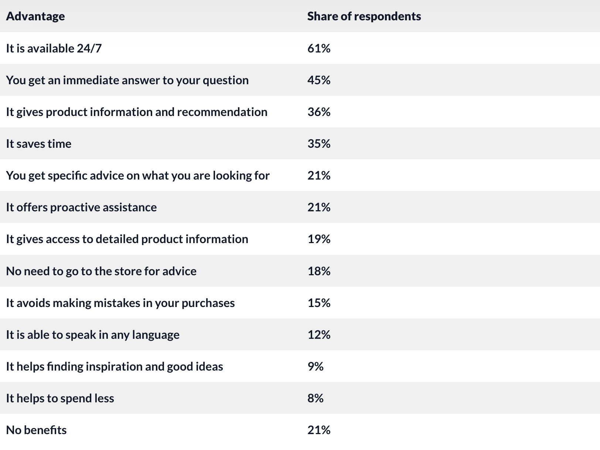

The speed at which artificial intelligence is developing is well known. Artificial intelligence can be used in every line of business. E-commerce will be the topic of this article. E-commerce, to put it simply, is the purchasing and selling of goods using the internet. (Hashemi-Pour & Lutkevich, 2023)
Contents:
AI algorithms paired with machine learning allow the website to suggest content to show the user. Machine learning simply learns human nature by using data and algorithms, gradually increases its accuracy. The content that is shown to the user depends on the data that there is about the user. This can be anything from what the user clicks on, their purchase history, and the country that they are based in. This is beneficial for both the user and the business. (Power, 2024)
The user is only shown products that they would be attracted to. This is based on the user’s activity on the website.
The business is more likely to make sales if their customers are only shown products that they would be interested in.
This way both parties win. Customers are more satisfied, while the business has an increase in conversions, better customer insights as well as increased customer loyalty.
AI may also affect e-commerce enterprises' pricing. Similar to how it suggests things to clients, it may accomplish this by utilising current, real-time data. This is done by examining current market patterns and utilising algorithms along with predictive analytics to ultimately determine the optimal pricing for the product at that particular moment. This guarantees that the business maximises earnings and that the customer receives the best possible bargain. (Lumenalta, Ai in dynamic pricing 2024)
AI has really transformed the customer service aspect of companies. In fact, some of the largest companies including Amazon currently leverage AI to solve customer queries. AI has the power to provide customers with any queries they have, such as order status, and answer them at an instant. AI can then act as a Virtual Assistant and offer a more personalised solution by asking the customer for their order details. (iAdvize, 2024)

Overall, AI can massively reduce business expenses as less support staff is needed. At the same time, most customers are happier as they do not have to wait in queues and get instant responses.
I personally use AI for my own products, as do many others. This eliminates the need for a photography team, as AI tools have the ability to generate product photos. Below I have inserted an example of a product photo that I created using AI. It is an example for a supplement brand. This photo took 30 seconds to generate with AI, whereas it would have required a production team to replicate the results. The photo was generated using MidjourneyAI with the following prompt: “supplement bottle on a podium with Himalayas in the background, real photo.--ar 1:1”
With E-Commerce being an industry that is rapidly growing, it is inevitable that the levels of fraud are going to increase with it. This is prevented by protecting customer data and securing online transactions, all with the power of Artificial Intelligence. This is done by using machine learning that identifies anomalies and abnormal activity. For example, if a ‘customer’ is making a purchase that has a particularly large transaction size, or they do not have any purchase history, red flags will be raised by the AI. (DigitalOcean, 2024)
The four main ways that AI can detect fraud are as follows:
This provides the customers with a safe and secure shopping experience, while also maintaining the reputation of the company, allowing both parties to win.
The use of AI has a plethora of benefits, however there are ethical aspects to consider.
Job Security:
AI’s ability to automate and streamline tasks can cause many people to lose their jobs.
People's Needs:
There may be customers who would much rather speak to a human rather than AI when it comes to customer service. This is simply resolved by giving them the option for both. (Dorst, 2024)
AI has far more advantages than disadvantages, especially in e-commerce. Not only do businesses benefit from leveraging AI, customers are far more satisfied. This suggests that AI is a positive force for the world of e-commerce, despite the loss of a small number of jobs. After all, customer satisfaction is very important.
Hashemi-Pour, C. and Lutkevich, B. (2023) What is e-commerce?: Definition from TechTarget, Search CIO. Available here (Accessed: 05 December 2024).
Power, R. (2024) Next-level ecommerce: Ai’s Secret Weapon for personalized experiences, Forbes. Available here (Accessed: 05 December 2024).
Ai in dynamic pricing (2024) Lumenalta. Available here (Accessed: 05 December 2024).
iAdvize (2024) How using AI in customer service benefits E-commerce operations, iAdvize. Available here (Accessed: 05 December 2024).
Ai in ecommerce statistics (2024) SellersCommerce. Available here (Accessed: 05 December 2024).
Understanding AI fraud detection and prevention strategies (2024) DigitalOcean. Available here (Accessed: 05 December 2024).
Dorst, A.V. (2024) Human vs AI in customer service: Why & what consumers prefer, CloudAnalysts, UK Salesforce Marketing Consulting Partner. Available here (Accessed: 05 December 2024).